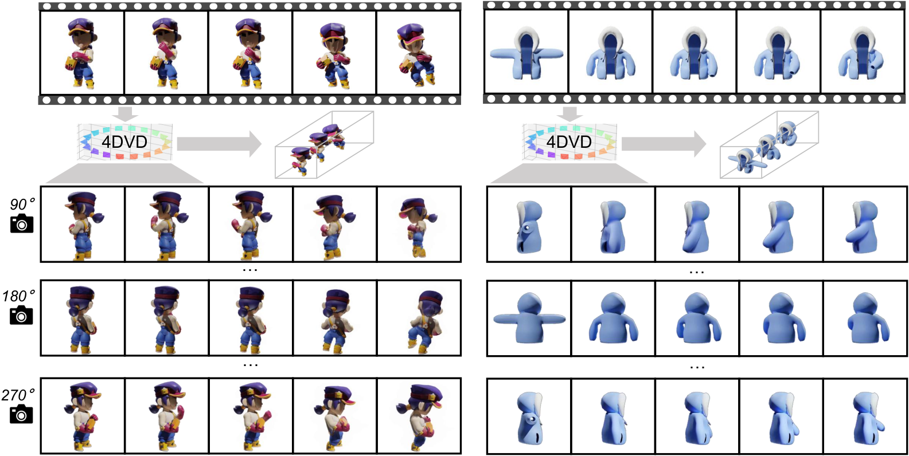
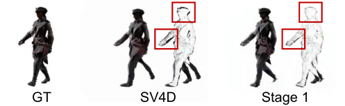
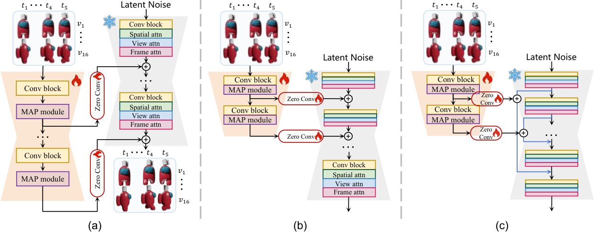
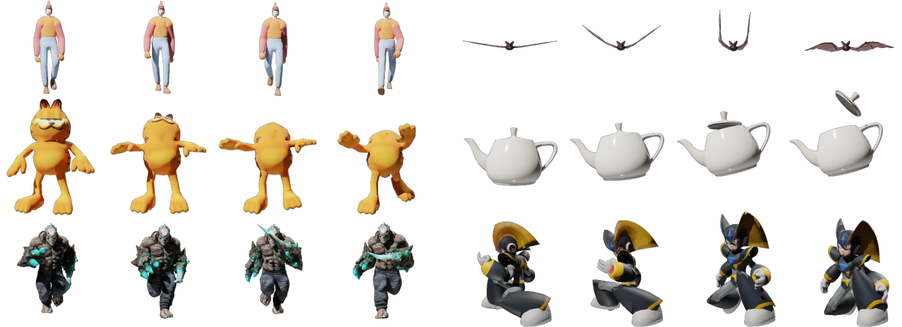
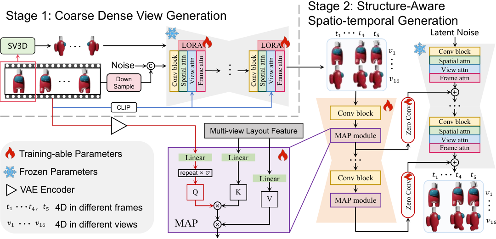
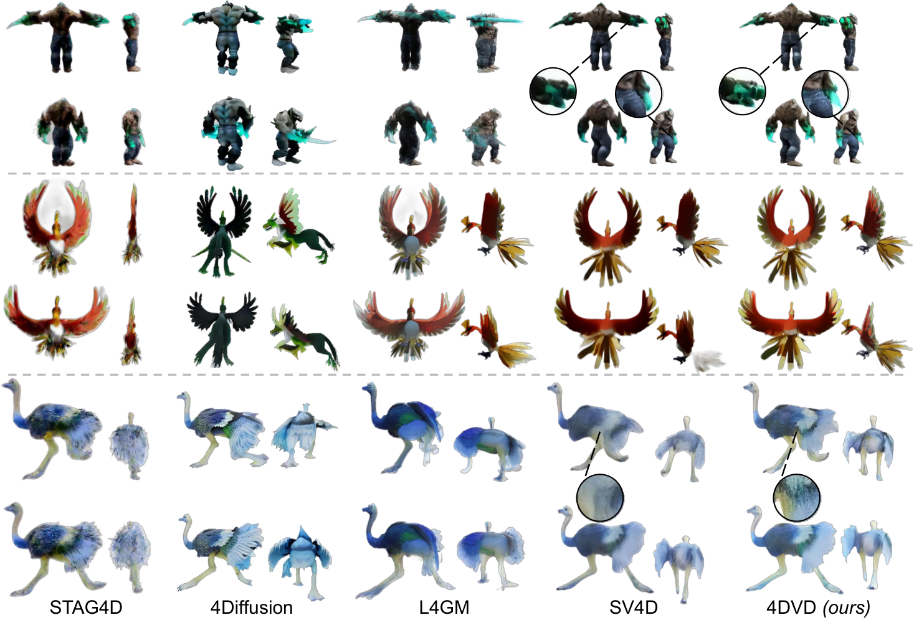
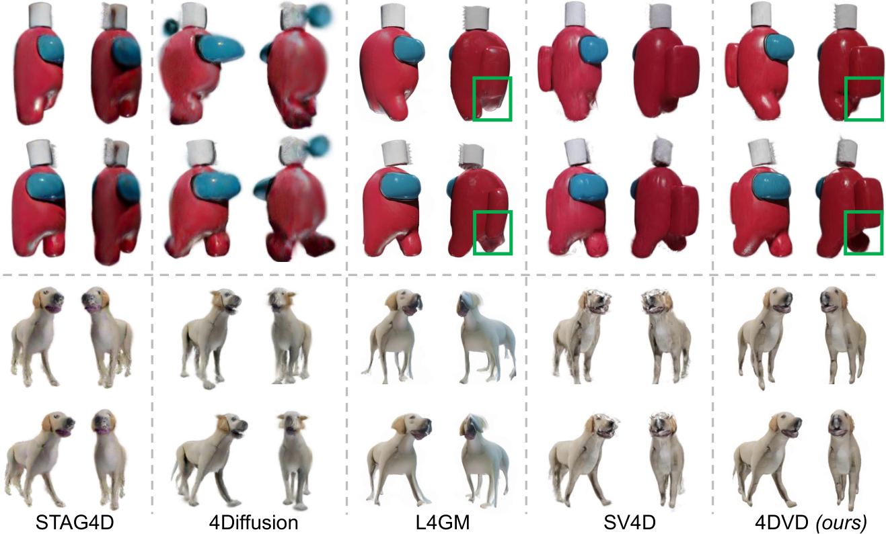
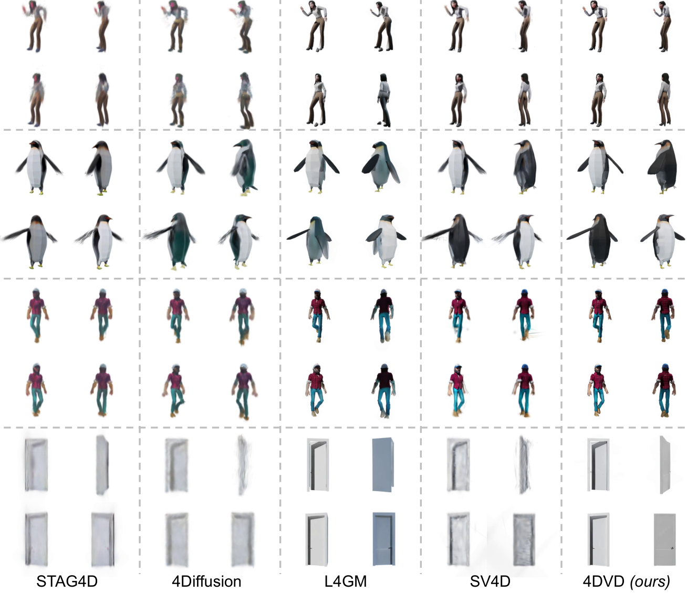
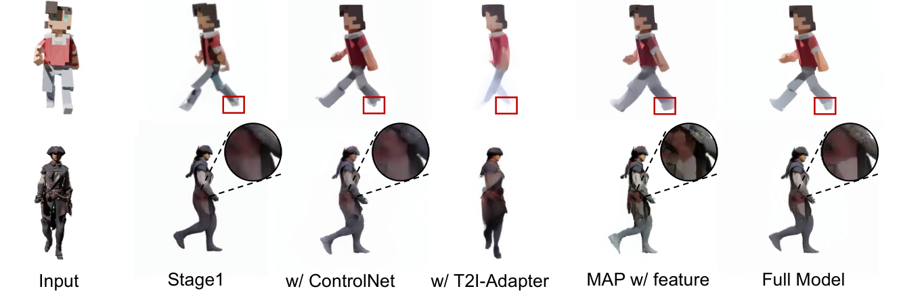

4DVD 是北京大学深圳研究生院、大湾区大学与腾讯合作的 4D 内容生成工作,任务设定是「给定一段单目视频,生成该动态物体的稠密多视角视频,并据此重建显式 4D 表示(4D 高斯)」。它的贡献不在某个模块的巧思,而在问题分解的方式。
T×V 的高维网格。作者观察到多视角视频里空间信息是「过冗余」的(同一块视觉内容会在不同视角、不同帧上重复出现),于是主动牺牲分辨率换取视角密度——先用低分辨率、16 视角训一个「粗糙布局」生成器,再用这个布局当条件、把输入单目视频的高清外观「传播」到所有视角。把 4D 生成拆成布局建模与外观生成两个子任务,论文称其为 cascaded / decoupled。

论文把前作分成两支,并分别指出失败模式——这一点做得比多数论文具体:
用 SDS 把多视角/图像生成模型的 3D 先验与视频扩散模型的时间先验蒸到 4D 表示里。三个具体问题:
直接前馈预测每帧的 3D 高斯参数,无需迭代采样,速度极快(15 秒)。但:
把最终 4D 内容看成一张 T×V 图像网格,模型负责按边缘条件补全网格。质量最高,但有一个硬约束:
T×V 张图,显存(V RAM)限制视角数——论文指出即使在最先进的 GPU 上,V 也只能取到 4(4Diffusion)或 8(SV4D);基于这个假设,4DVD 先预测跨视角与跨时间一致的稠密视角布局(以牺牲空间细节为代价),再基于这些布局做结构感知的条件生成,得到高质量 4D 资产。论文还给了一个很好记的类比:这与人类视觉系统的工作方式一致——先一眼感知动态物体的整体布局,再聚焦丰富细节。
给定一段动态物体的单目视频 $\textbf{I}\in\mathbb{R}^{T\times D}$,其中 $T$ 为帧数,$D=3\times H\times W$ 为单帧维度。4DVD 的目标是把视频从 $\mathbb{R}^{T\times D}$ 扩展到 $\mathbb{R}^{T\times V\times D}$,$V$ 为视角数:
论文明确指出:更多视角有助于更完整地建模动态 3D 空间,因此选择「由粗到细」的级联结构——先把 T×V 网格在低分辨率下解出来,再在部分视角高分辨率下精修。
| 符号 | 含义 | 形状 / 取值 |
|---|---|---|
| $\textbf{I}$ | 输入单目视频 | $\mathbb{R}^{T\times D}$ |
| $T$ | 视频帧数(完整 21 帧,训练时取 5 帧窗) | 训练 $T=5$,推理 21 |
| $V$ | 视角数 | 训练 stage1 = 16;stage2 = 4;推理 = 16 |
| $D$ | 单帧像素维度 | $3\times H\times W$ |
| $\textbf{z}_0$ | VAE 编码后的干净 latent | — |
| $\textbf{z}_t$ | 加噪 $t$ 步的 latent | $\sqrt{\bar\alpha_t}\textbf{z}_0+\sqrt{1-\bar\alpha_t}\bm\epsilon$ |
| $\textbf{c}_f$ | 参考视频条件(stage 1) | — |
| $\textbf{c}_v$ | 参考视角条件(stage 1) | — |
| $F^{\text{ref}}$ | 参考视频的归一化 VAE 特征 | — |
| $F^{\text{LR}}$ | 粗粒度多视角布局特征 | 形状 $T\times V$(条件分支内部) |
| $L_Q,L_K,L_V$ | 计算 Q / K / V 的线性层 | — |
| $WH$ | 当前层的空间分辨率(论文按 WHV 记) | — |
| $N_c$ | 当前层的特征通道数 | — |
| $\theta$ | 可训练参数(stage 1 为 LoRA;stage 2 为条件分支) | — |
| 阶段 | 做什么 | 分辨率 | 视角数 | 训练/推理差异 |
|---|---|---|---|---|
| Stage 1 · 粗粒度稠密视角生成 | 继承 SV4D 结构,用 LoRA 在稠密低分辨率视频上微调,只求跨视角/跨时间一致的布局先验 | 256×256 | 16 | 只训 LoRA(注入三个注意力块) |
| Stage 2 · 结构感知时空生成 | 冻结主干 SV4D,训一个结构条件分支(卷积块 + MAP 模块),按布局条件生成高清外观 | 576×576 | 训练随机 4 路;推理全 16 路 | 只训条件分支 |
SV4D 这类多视角视频生成模型在稀疏视角视频上训练。理论上「直接把推理时的视角数调大」就能出更多视角,论文用一张图否掉了这条路——这是本文动机最硬的证据:

论文给出了一个来自实验的边界条件(而非单纯的经验值):
阶段一通过注意力机制同时生成多视角视频,因此空间与时间上的结构信息是一致的。但这些布局纹理模糊、分辨率低、质量与输入视频有差距。阶段二的目标是基于这些一致布局产出高质量稠密视角视频。
受既有条件生成方法(ControlNet、T2I-Adapter、Animate Anyone)启发,4DVD 也采用「特定分支提特征 → 注入基模型」的范式:

| 输入 | 层 / 算子 | 输出 |
|---|---|---|
| 阶段一布局 $\hat{\textbf{I}}^{\text{LR}}$,形状 $T\times V$(低分辨率) | VAE 编码 → 卷积块堆叠 | 与主干对齐的布局 latent $F^{\text{LR}}$ |
| 输入单目视频 $\textbf{I}$,形状 $T\times 1$ | VAE 编码 + 归一化 | 外观参考特征 $F^{\text{ref}}$ |
| $F^{\text{ref}}$,$F^{\text{LR}}$ | MAP 交叉注意力(Q 取自 $F^{\text{ref}}$,KV 取自 $F^{\text{LR}}$) | 融合特征,逐层注入 SV4D 主干 |
| 主干加噪 latent $\textbf{z}_t$ | SV4D DiT(冻结) | 噪声预测 $\varepsilon_\theta(\textbf{z}_t,t,\textbf{I})$ |
该模块无独立监督损失,其参数完全由阶段二的整体去噪目标(式 5)反向传播更新。
MAP(Monocular Appearance Propagation,单目外观传播)是本文最「手工」也最值得单独记一笔的设计。
常规交叉注意力用当前模型的特征算 Q,用外部条件算 K/V。但 4DVD 的情形是:
两者不对齐:如果沿用常规做法(用多视角粗结果当 Q、用单目视频当 KV),就退化成「基于单目视频强行把多视角粗结果放大」——这正是论文实验发现会产生明显视觉伪影的用法。
为了支持这种改过的跨视角计算,参考视频在相乘前重复 $V$ 次。训练时 $V=4$,推理时用完整的粗粒度图像网格即 $V=16$。
强制模型在参考视频条件 $\textbf{c}_f$ 与参考视角条件 $\textbf{c}_v$ 下产生 16 视角视频,优化对象是被加入的 LoRA 参数 $\theta$:
优化条件分支,条件为随机采样的 4 个粗粒度布局 $\textbf{I}\in\mathbb{R}^{T\times 4}$:
这一节在论文里被当作「主要贡献之一」,因为它直接决定模型能不能学到稠密视角的 4D 先验。
Objaverse 里绝大多数物体是静态的,无法用于训练多视角视频模型。可用的开源动态 3D 数据(如 SV4D 用的 ObjaverseDy、Consistent4D)要么样本量有限,要么包含大量低质量样本。论文把低质量归纳为三种具体表现:
很多 3D 物体只是常见物体的一部分,比如一条手臂、一条腿。
部分样本运动幅度过大,或者几乎看不出运动。
画面模糊/混乱,虽然也是动态 3D 物体但无法使用。
| 针对的问题 | 使用的判据 | 说明 |
|---|---|---|
| ① 结构不完整 | 多模态大模型 CogVLM | 用 MLLM 过滤掉含不完整结构的样本 |
| ② 运动异常 | 帧间光流 | 通过计算帧间光流保留「运动合理」的样本 |
| ③ 内容未定义 / 质量差 | LPIPS | 用 LPIPS 筛选出质量可接受的样本 |

| 项 | 训练 | 推理 |
|---|---|---|
| 帧窗 $T$ | 5 | 5(再靠 anchor-sampling 扩到 21 帧) |
| 视角数 $V$ | 阶段一 16;阶段二随机 4 | 16 |
| 分辨率 | 阶段一 256²;阶段二 576² | 阶段一 256²;阶段二 576² |
| 采样步数 | — | 每阶段各 10 步(SV4D 官方代码为 20 步) |
| 显存 | 论文未给出 | 约 30GB(可一次输出完整的 $5\times16$ 高清网格) |
file:line 级源码佐证。凡论文未写明的项,本表标「未给出」而不估计数值。
| 项 | 取值 | 出处 |
|---|---|---|
| 数据集 | D-Objaverse(自建);随机选 50 个动态物体评测,其余用于训练 | §5.1 |
| 渲染 | Blender,16 视角,每视角 $576\times576$,10 FPS | §5.1 / §8 |
| 序列长度 | 训练用 5 帧窗;完整 21 帧(推理靠 anchor-sampling 扩) | §5.1 |
| 阶段一监督 | 16 视角低分辨率视频 | §5.1 |
| 阶段二 | 每迭代随机取 4 视角高清,产 $5\times4$ 图像网格 | §5.1 |
| 可训练模块 | 阶段一:LoRA(注入 3 个注意力块);阶段二:结构条件分支 | §3.3 / §3.4 |
| 冻结模块 | 两阶段的 SV4D 主干(阶段二明确「冻结基模型」) | §3.4 |
| LoRA rank / 学习率 / 优化器 / batch size | 论文未给出 | — |
| 训练总步数 / GPU 型号数量 / 训练时长 | 论文未给出 | — |
| 采样步数 | 推理时每阶段 10 步(SV4D 官方为 20 步) | §5.4 |
| 项 | 数值 | 出处 / 备注 |
|---|---|---|
| 推理峰值显存 | 约 30GB(一次输出完整 $5\times16$ 高清网格) | §5.1 原文 "within 30GB VRAM" |
| 端到端推理耗时 | 381 秒= 阶段一 51 s + 阶段二 330 s | Table 2,单张 A6000 |
| 参数量 | 论文未给出 | — |
| 训练总时长 | 论文未给出 | — |
三个指标 + 三个 FVD 变体。论文对 FVD 变体的定义值得记下,因为它揭示了这个任务里「一致性」到底怎么被量化:
另有 LPIPS(感知质量)与 CLIP-S(视觉质量)。基线为 STAG4D(SDS 优化)、L4GM(大重建模型)、4Diffusion 与 SV4D(多视角视频模型)。
| 模型 | 类型 | 多视角视频 | 4D 资产 | ||||||
|---|---|---|---|---|---|---|---|---|---|
| LPIPS ↓ | CLIP-S ↑ | FVD-F ↓ | FVD-V ↓ | FVD-Diag ↓ | LPIPS ↓ | CLIP-S ↑ | FVD ↓ | ||
| STAG4D | 优化式(SDS) | 0.156 | 0.892 | 714.51 | 528.06 | 652.17 | 0.157 | 0.902 | 879.19 |
| L4GM | 大重建模型 | 0.144 | 0.910 | 606.90 | 467.81 | 525.22 | 0.143 | 0.911 | 543.57 |
| 4Diffusion | 多视角视频模型 | 0.155 | 0.899 | 853.89 | 776.92 | 816.88 | 0.165 | 0.874 | 822.29 |
| SV4D | 多视角视频模型 | 0.136 | 0.913 | 586.41 | 482.64 | 542.87 | 0.161 | 0.897 | 677.56 |
| 4DVD | 多视角视频模型 | 0.133 | 0.927 | 507.12 | 314.44 | 456.01 | 0.136 | 0.919 | 438.41 |
| 方法 | STAG4D | L4GM | 4Diffusion | SV4D | 4DVD |
|---|---|---|---|---|---|
| Runtime(s) ↓ | 4200 | 15 | 480 | 565 | 381(51 + 330) |




| 设置 | LPIPS ↓ | CLIP-S ↑ | FVD-F ↓ | FVD-V ↓ | FVD-Diag ↓ |
|---|---|---|---|---|---|
| Stage 1(仅粗阶段) | 0.147 | 0.901 | 668.25 | 422.56 | 605.73 |
| w/ ControlNet | 0.141 | 0.920 | 558.42 | 407.75 | 535.14 |
| w/ T2I-adapter | 0.173 | 0.896 | 802.40 | 609.45 | 714.37 |
| MAP w/ feature(常规注意力用法) | 0.152 | 0.912 | 572.91 | 397.36 | 512.15 |
| Full Model | 0.133 | 0.927 | 507.12 | 314.44 | 456.01 |

—,不填估计值。
| 方法 | 年份 | 输入假设 | 场景表示 | 监督信号 | 训练数据 | 训练时长 | 推理耗时 | 显存 | 关键指标 | 开源 |
|---|---|---|---|---|---|---|---|---|---|---|
| 4DVD(本文) | 2025-08 | 单目视频,单物体,可环绕 | 多视角视频 → 4D 高斯(DreamGaussian4D 表示) | 去噪 MSE(两阶段解耦:LoRA / 条件分支) | D-Objaverse 17k 资产,16 视角 × 21 帧 | 未给出 | 381 s(A6000) | 约 30 GB | LPIPS 0.133 / FVD-V 314.44 | 否 |
| SV4D | 2024-07 | 单目视频 → 5 帧 × 8 视角 | 动态 NeRF / 隐式 4D | 去噪 MSE | Objaverse 系合成物体 | — | 565 s(A6000,论文复测) | — | LPIPS 0.136 / FVD-V 482.64 | 是(基座) |
| 4Diffusion | 2024-05 | 单目视频,4 视角 | 4D 高斯 | 去噪 MSE | — | — | 480 s(A6000,论文复测) | — | LPIPS 0.155 / FVD-V 776.92 | — |
| L4GM | 2024-06 | 单目视频,4 视角 | 直接预测每帧 3D 高斯参数 | 几何 + 渲染回归 | Objaverse 系 | — | 15 s(A6000,全表最快) | — | LPIPS 0.144 / FVD-V 467.81 | — |
| STAG4D | 2024 | 单目视频 | 时空锚定 4D 高斯 | SDS 蒸馏 | — | — | 4200 s(全表最慢) | — | LPIPS 0.156 / FVD-V 528.06 | — |
| CAT4D | 2024-11 | 单目视频;论文正文提及:面对 soft structure 运动时形变严重 | 可变形 3DGS | 多视角视频扩散 | 动态场景基准(如 DyCheck) | — | — | — | — | — |
| Diffuman4D | 2025-07 | 4 路同步稀疏视角视频 → 44 路目标视角 | 4DGS(LongVolcap 官方 / splatfacto 备选) | 去噪 MSE(骨架图条件,文本条件关闭) | 自建 dna_rendering_processed(1000+ 序列 × 48 相机) | — | — | — | DNA-Rendering 上 24.23 dB PSNR(GT-skeleton 设置) | 是(zju3dv/Diffuman4D) |
4DVD 的每个组件都不是原创发明:SV4D 脊骨是继承的、LoRA 是现成的、交叉注意力是现成的、ControlNet / T2I-Adapter 是现成的。它的增益来自把「生成 T×V 高维网格」重写为「生成布局 + 传播外观」,并把「视角密度 vs 分辨率」的资源取舍显式化。这类贡献迁移成本最低——不需要新算子,只需要新的训练课程。
全部训练与评测都在合成单物体资产上。SDS 系(如 STAG4D)虽慢、虽过平滑,但先验来自大规模真实图像/视频模型,天然覆盖开放域;4DVD 的先验被锁在 Objaverse 的渲染风格里。此外 D-Objaverse 尚未释放,训练侧目前不可复现。
这是一条对本库有价值的核对:Diffuman4D 在 DNA-Rendering 上报告 24.23 dB PSNR(Diffuman4D-GT-skeleton 设置),而 Flex4DHuman(其直接后续)报告 25.44 dB。两个数字分别取自各自论文的 Table 2,且用的是同一评测协议(16 场景 Diffuman4D 测试划分、1 参考视角、47 目标视角)——Flex4DHuman 使用的正是 Diffuman4D 的 processed 数据发布,所以可比。这说明「路线 A」在 2025-07 → 2026-06 约一年内把 PSNR 抬高了约 1.2 dB;而 4DVD(2025-08,物体域)是这条线的通用起点。
| 范式 | 代表方法 | 核心先验 | 局限 |
|---|---|---|---|
| SDS 蒸馏优化 | STAG4D、4D-fy、DreamGaussian4D | 2D/多视角图像扩散 + 视频扩散的时间先验,蒸到 4D 表示 | 逐资产优化,数十分钟;过平滑;Janus;不同来源先验互相冲突 |
| 大重建模型直出 | L4GM | 前馈直接回归每帧高斯参数 | 训练资源巨大;隐式参数建模难度限制质量;细长结构崩坏 |
| 多视角视频扩散 · 稀疏 | SV4D(8 视角)、4Diffusion(4 视角) | 一个模型同时出多视角与多帧,网格补全 | 显存限制视角数;视角稀疏导致无法重建显式 4D 表示 |
| 多视角视频扩散 · 级联解耦 | 4DVD | 空间信息过冗余 → 用分辨率换视角密度;布局与外观分阶段 | 单物体合成域;粗阶段分辨率受 VAE 下限约束;训练数据未释放 |
| 多视角视频扩散 · 上下文工程 | 4DAnyone、Flex4DHuman | 把瓶颈归因为「有界注意力上下文」,用 RCP/TCR 或历史 token rollout 解决 | 人体专用;泛化到真实无控场景仍有限 |
判断基准是本库主线的实际约束:单卡 RTX 3090(24GB)、WSL2、12–16 路中等稀疏的可控/自采场景、目标是人体。
| 维度 | 4DVD 的情况 | 能不能进我们的 pipeline |
|---|---|---|
| 显存 | 推理约 30GB,超过 3090 的 24GB | 直接跑不了。要跑必须降视角数 / 降分辨率 / 分块推理,论文未提供这些变体的可行性数据 |
| 耗时 | 381 s / 资产(A6000,约比 3090 快 1.5–2×) | 单资产可接受,换 3090 会更慢 |
| 数据域 | 纯合成单物体(Objaverse 渲染风格) | 域差是最大障碍。人体、宽松衣物、头发均未训练 |
| 输入假设 | 单目视频,单物体,可环绕 | 我们的场景是多人 + 场景 + 遮挡,与「单物体可环绕」不符 |
| 可复现性 | 无代码;D-Objaverse 未释放 | 只能作为方法论参考,不能作为组件采用 |
| 可借鉴的组件 | MAP 的 Q/KV 交换、「布局先行、外观后补」的训练课程、分辨率换视角密度的取舍逻辑 | 这三条可独立借用,尤其适用于我们「多视角视频 → 3DGS 拆分(head/body/scene)」链路里视角不足的情况 |
[高优先级] 粗阶段的 256² 是硬瓶颈,而作者未给出规避路径。
问题:论文承认 VAE 在过低分辨率下无法忠实重建图像,因此「16 视角 + 256²」已是实用极限。但论文没有实验数据支撑这个下限具体在哪——只说「我们观察到」,未给分辨率扫描曲线。
佐证:§3.3 原文 "we observe that the VAE encoder-decoder cannot reproduce images with too low resolution faithfully";Table 3 中 Stage 1 单独跑的 LPIPS 为 0.147,最终为 0.133,说明粗阶段的外观损失确实要靠第二阶段补。
改进建议:把「分辨率下限」当超参去扫(256²/192²/128² × 视角 16/24/32),给出 FVD-V 与 LPIPS 的权衡曲线;或换用分辨率自适应的 VAE / 在同一模型内做多尺度 latent 金字塔,让不同尺度承担不同职责。
[中优先级] 阶段二每迭代只用 4 个视角监督,缺乏「为什么是 4」的证据。
问题:论文说因显存限制随机取 4 视角,并论证「阶段二不需要全视角条件」。但随机 4 路意味着每迭代只覆盖 1/4 视角,论文没有给出视角采样数(4/8/16)的消融,也没说明随机采样的方差不影响收敛。
改进建议:补一张「每迭代采样视角数 × 收敛步数 × 最终 FVD-V」的三维表;若方差确实大,可改用「按布局质量加权的确定性视角调度」而非纯随机。
[中优先级] 两阶段之间没有反馈:粗阶段的错误只能被「纠正一部分」。
问题:阶段一固定后训练阶段二,阶段一不会因阶段二的失败而调整。论文承认阶段一会输出畸变(如卡通角色的手脚),阶段二「有能力修正」,但没有量化修正了多少 / 有多少错误被固化。
改进建议:加一条从阶段二回到阶段一的梯度或迭代精修(类似 StudioRecon 的 iterative refinement:在优化中点用生成结果反过来补充监督),形成真正的闭环。
[高优先级] 全部数据为合成单物体,且数据集未释放。
问题:D-Objaverse 全部来自 Objaverse 系渲染,没有真实拍摄、没有多人、没有场景、没有人体。论文在 Limitation 中承认「复杂几何与复杂运动可能表现不佳」,但把原因归给「网络容量与训练数据」,未展开。且论文承诺发表时释放,至今(2026-09)未见公开仓库。
改进建议:补一版在真实视频(如 MVHumanNet / DNA-Rendering)上微调的实验,至少给出「域迁移后的性能衰减曲线」,让使用者知道迁移成本。
[中优先级] FVD-V / FVD-Diag 是「分布距离」而非「几何正确性」,论文未做几何验证。
问题:4DVD 的核心卖点是「更一致的多视角」,但全部多视角指标都是 FVD 族(感知分布距离)。论文没有报告任何几何层面的度量(如多视角重投影误差、Chamfer 距离、点云法线一致性)。作为对照,StudioRecon 用 PCK@0.05 直接量了 GEN3C 与自身在人体位姿上的几何误差(55.6% vs 93.1%),这种证据更硬。
改进建议:补一组「把生成的多视角视频重建为 4D 高斯后,与 GT 4D 资产做几何比对」的指标。
[中优先级] 30GB 显存门槛把工作排除在消费级显卡之外。
问题:论文把「一次出完整 5×16 高清网格」当作卖点,代价是 30GB 显存。3090(24GB)与 4090(24GB)都跑不了。
改进建议:给出分块推理(order-agnostic 的视角分组 + 重叠融合)方案与质量损失数据;这一件事直接把可用人群扩大数倍。
[低优先级] 训练侧超参、显存、时长全部缺失,无法复现训练。
问题:LoRA rank、学习率、优化器、batch size、训练步数、GPU 数量与型号均未给出(见 §10.1)。即便数据集释放,复现训练仍然缺关键信息。
改进建议:照 StudioRecon 的做法,把优化配置集中在一个 config 文件里随代码放出。
| 优先级 | 改进点 | 理由 |
|---|---|---|
| [高] | 粗阶段分辨率下限缺证据 | 这是整个方法可扩展性的天花板,且改动成本低(补一组扫描实验) |
| [高] | 数据域为纯合成单物体且未释放 | 直接决定它能否被任何真实场景使用 |
| [中] | 每迭代 4 视角缺乏消融 | 影响收敛稳定性与显存/质量权衡的可调性 |
| [中] | 两阶段无反馈闭环 | 粗阶段错误会被固化,是质量上限的主要来源 |
| [中] | 缺几何正确性度量 | 「更一致」目前只有感知指标支撑 |
| [中] | 30GB 显存门槛 | 决定落地人群规模 |
| [低] | 训练超参缺失 | 影响复现,但不影响方法本身的正确性 |
4DVD 处在「路线 A:多视角视频生成 → 4DGS 重建」的通用起点位置。它之前是 SV4D(稀疏视角)、CAT4D(相机/时间解耦);它之后,这条线在人体方向分化出 4DAnyone(上下文工程:用 RCP 压缩参考、TCR 轮换目标分组)与 Flex4DHuman(取消一切显式几何先验,只留相对相机位姿)。另一条更激进的路线 Latent-to-4D 则质疑了整条路线的前提——「生成与重建之间的接口为什么必须是 RGB」。
Shuzhou Yang(PKU 深圳研究生院)、Xiaodong Cun(大湾区大学)、Xiaoyu Li(腾讯)、Yaowei Li(PKU 深圳研究生院)、Jian Zhang(PKU 深圳研究生院)。致谢提到本工作受广东省超高清沉浸媒体技术重点实验室资助(Grant No. 2024B1212010006)。
4dvd.github.io 未提供代码链接,纯论文 + 视频展示页。GitHub 检索「4DVD」得到的结果(dafrenchyman/4dvd、omarpimient/4DVD、JSiegel0516/4DVD-React 等)均与本论文无关。D-Objaverse 数据集论文承诺「发表时释放」,截至检索日未见公开入口。